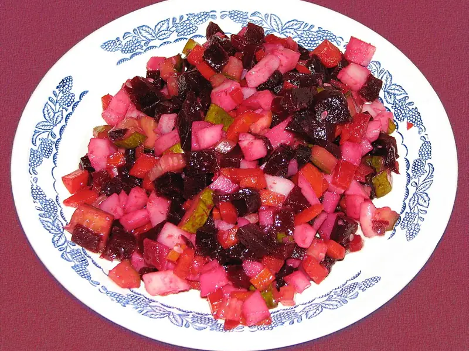

Фото: Loyna (original image) ; processed by Off-shell, CC BY-SA 2.5

Винегрет
Салат из варёной свёклы, картошки, моркови, квашеной капусты и огурцов на масле
75 мин6 порц.178 ккал на порциюБ 4 · Ж 9 · У 21Русская кухня
Продукты на 6 порц.
- Свёкла2 шт
- Картофель3 шт
- Морковь2 шт
- Огурцы солёные3 шт
- Квашеная капуста200 г
- Зелёный горошек по желанию0,5 шт
- Лук репчатый1 шт
- Растительное масло3 ст. л.
- Сольпо вкусу
- Вода3000 мл
Как готовить
- Вымойте свёклу, картофель и морковь. Свёклу варите отдельно 50-60 минут, картофель и морковь 20-25 минут, пока нож не будет входить легко.
- Остудите овощи и очистите.
- Нарежьте свёклу кубиком 1 см, сложите в отдельную миску и перемешайте с 1 ст. л. масла, чтобы она не окрасила остальные овощи.
- Нарежьте тем же кубиком картофель, морковь, огурцы и лук. Квашеную капусту отожмите от рассола.
- Соедините всё со свёклой, добавьте горошек, оставшееся масло и соль, перемешайте.
- Дайте постоять в холодильнике 30 минут перед подачей.
Совет. Чтобы ускорить, свёклу можно запечь в фольге при 200 °C (сильный жар) 1 час или купить уже варёную. Хранится в холодильнике 2 дня.